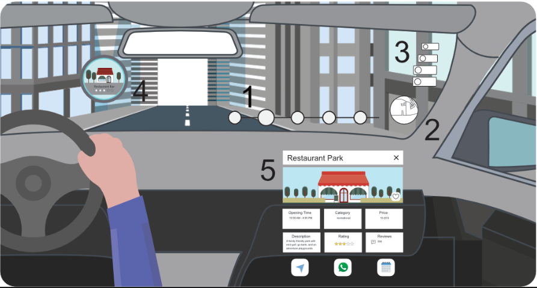
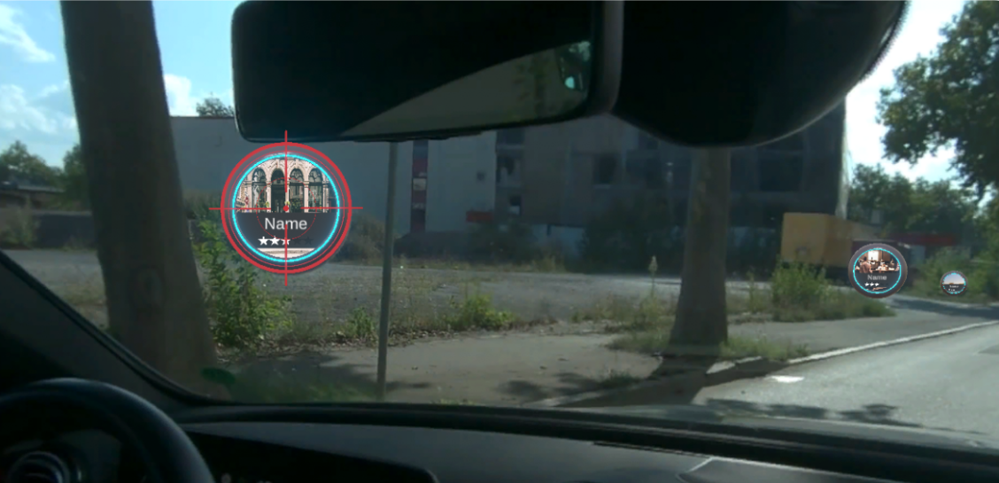
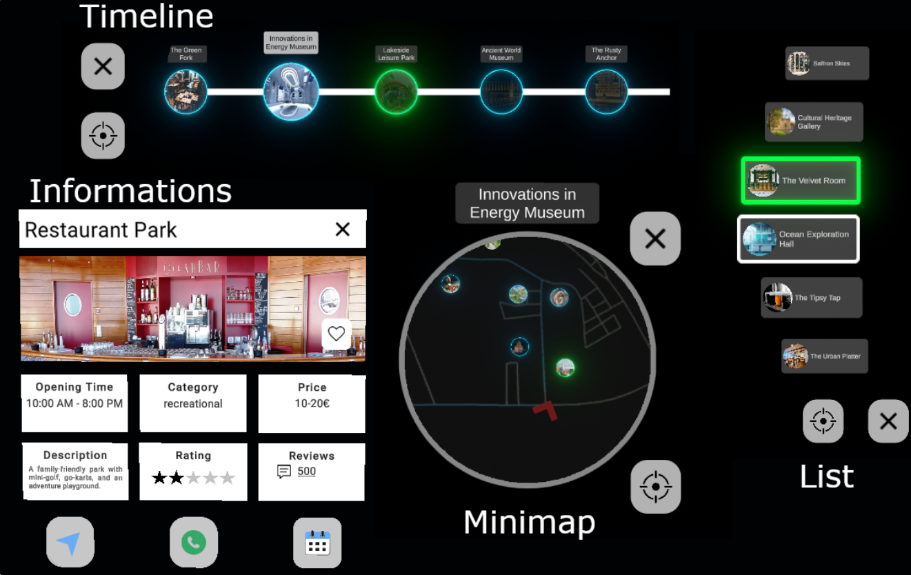

Augmented Journeys
Interactive Points of Interest for In-Car Augmented Reality
1RheinMain University of Applied Sciences 2Mercedes-Benz Tech Innovation GmbH 3Institute of Media Informatics, Ulm University
CHI'25 Honorable Mention Award
Abstract
As passengers spend more time in vehicles, the demand for non-driving related tasks (NDRTs) increases. In-car Augmented Reality (AR) has the potential to enhance passenger experiences by enabling interaction with the environment through NDRTs using world-fixed Points of Interest (POIs). However, the effectiveness of existing interaction techniques and visualization methods for in-car AR remains unclear. Based on a survey (N=110) and a pre-study (N=10), we developed an interactive in-car AR system using a video see-through head-mounted display to engage with POIs via eye-gaze and pinch. Users could explore passed and upcoming POIs using three visualization techniques: List, Timeline, and Minimap. We evaluated the system’s feasibility in a field study (N=21). Our findings indicate general acceptance of the system, with the List visualization being the preferred method for exploring POIs. Additionally, the study highlights limitations of current AR hardware, particularly the impact of vehicle movement on 3D interaction.



Citation
If you find this work useful, please consider citing:
@inproceedings{Schramm2025AugmentedJourneys,
author = {Schramm, Robin Connor and Fedrizzi, Ginevra and Sasalovici, Markus and Freiwald, Jann Philipp and Schwanecke, Ulrich},
title = {Augmented Journeys: Interactive Points of Interest for In-Car Augmented Reality},
year = {2025},
isbn = {9798400713941},
publisher = {Association for Computing Machinery},
address = {New York, NY, USA},
doi = {10.1145/3706598.3714323},
booktitle = {Proceedings of the 2025 CHI Conference on Human Factors in Computing Systems},
articleno = {77},
numpages = {19},
series = {CHI '25}
}